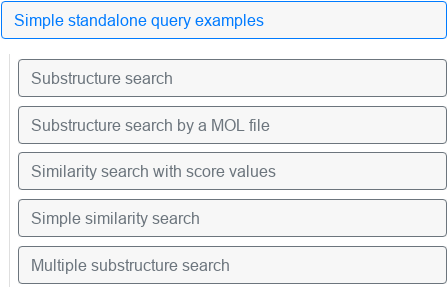

This manual describes the functionality of the provided user interface, and
the syntax and semantics of the molecular and substructural queries that the
users can submit to the SPARQL endpoint.
User interface
The user interface is separated into three parts: The SPARQL query editor,
result browser, and the list of example queries. We briefly describe the
functionality of each.
Example queries
Example queries are provided on the left margin of the interface. The users
can exploit them as a base for constructing more advanced queries.
To run an example query, first choose one from the list on the left by clicking it.

Choosing the example query.
After selecting an example query, two buttons appear: The Run
demo button can be used to execute the query and see the result right
away. Edit query button only transfers the text query to the Query
Editor, where the user can subsequently edit it to execute a modified
query.
Use the buttons to execute or edit the query.
Query editor
The text area can be used to specify various SPARQL queries, target SPARQL
endpoint (any publicly available endpoint, not only the IDSM one), and to
execute the query. The queries are specified in standard
SPARQL syntax. The interface
provides basic syntax highlighting and autocompletion of prefixes and keywords.
Several queries can be edited and executed at once, using the integrated tabs
functionality. Tabs and their contents are persistent even if the user closes
the frontend page in browser.
An example query can be run as such:
First, the user fills in the SPARQL query. The image shows a query
that selects substructures that contain chlorine connected to several
carbons:
Query editor with an example query.
Second, the target SPARQL endpoint is selected. Here, we use the IDSM
endpoint directly:
Endpoint selector.
The button on the left of the endpoint selection can be optionally used to
set up other query parameters, including the HTTP parameters and extra
arguments.
Finally, the query is executed using the corresponding button:
Button for executing the query.
The results can be observed in a table below the query editor.
Query result visualizer
The visualization of the SPARQL query results is displayed after the query is
successfully executed. Two switchable views of the result data are provided:
Table+ view displays the response arranged in a paginated table,
similar to the results of the SQL queries. URIs of molecules are automatically
displayed together with a corresponding generated zoomable image.
Table with example query results.
Response view displays raw, unformatted result of the SPARQL
query.
Sachem endpoints
Procedure calls in SPARQL
To avoid complicating the SPARQL syntax, procedure calls are expressed as
triple patterns using special predicate IRIs that identify the procedure. The
advantage of this approach is its transparecy for the user: Procedure calls,
their arguments and corresponding results can be queried in the same way as the
data triplets that are stored persistently in a database.
In our setting, the object of the triple pattern always represents
arguments, and the subject of the triple pattern always represents results of
the procedure call: result procedure argument. The object
(argument) in such triplet must be a blank node expressed in abbreviated form
(i.e. by using []). Properties of this blank node are then
understood as procedure arguments, objects of these properties must be constant
values or bound variables.
Procedure arguments and results
During the evaluation, the argument values are passed to the corresponding
procedure. IRIs of the arguments are specified in the procedure call
definition. Using such mapping brings several advantages: Easy specification
of default argument values, connection of argument values to their names
(specified as IRIs), ability ty process any ordering of the arguments, and
better description of the arguments by the database ontology.
Results of a procedure call are represented as the subject of the triple
pattern. If the procedure returns a simple data type (e.g. a list of URIs), the
variable used as the subject is bound to the results of the procedure.
To allow returning structured results with more individual values (e.g.
compounds that match given similarity search query along with their similarity
scores), we have defined a special way to represent multi-value results of
procedure calls similar to the way of passing multiple procedure arguments: The
subject of the procedure call is also specified as a blank node in abbreviated
form, individual properties of the blank node represent corresponding fields in
the structured result value. Objects of these properties are either variables
that are bound to the result values during the procedure evaluation, or
constants that serve as filters on the result values.
Supported datasets
The server provides a distinct SPARQL endpoint for each of the supported
datasets. Currently supported datasets include:
PubChem (endpoint idsm:pubchem)
ChEMBL (endpoint idsm:chembl)
ChEBI (endpoint idsm:chebi)
DrugBank (endpoint idsm:drugbank)
Wikidata (endpoint idsm:wikidata)
We write the IRI prefix idsm: as a shortcut for
https://idsm.elixir-czech.cz/sparql/endpoint/ for
convenience. And similarly, we write the IRI prefix sachem:
as a shortcut for
http://bioinfo.uochb.cas.cz/rdf/v1.0/sachem#.
For example, dataset specified by idsm:chebi is
available at IRI
https://idsm.elixir-czech.cz/sparql/endpoint/chebi.
Supported procedures call
The endpoints support queries that may call the chemical substructure and
similarity search procedures on all supported datasets.
Similarity search
The similarity search procedure call is mapped to property
sachem:similaritySearch. It accepts following arguments:
sachem:query specifies the chemical structure to be
searched for. Supported query types include
SMILES and
MDL molecule file. This argument is mandatory.
sachem:cutoff specifies the cutoff for the similarity search
(the default value is 0.8, values are in range of 0
to 1).
sachem:topn sets the upper limit on the count of returned
results (default value is "unlimited", specified by -1).
Results of the procedure are compound values, that have following
properties:
sachem:compound — compound URI
sachem:score — the similarity score of the compound
There is also a simplified variant of the similarity search procedure,
mapped to property sachem:similarCompoundSearch. It uses the same
arguments as sachem:similaritySearch, but returns the identified
compounds directly as single-value non-structured results.
Substructure search
The substructure search procedure is mapped to property
sachem:substructureSearch. It uses arguments
sachem:query and sachem:topn with the same meaning as
in the previous case, together with following extra arguments:
sachem:searchMode
chooses between exact structure and substructure search, using parameter values sachem:exactSearch and sachem:substructureSearch, respectively.
sachem:tautomerMode
chooses between various tautomer handling modes, value sachem:ignoreTautomers disables any tautomerism processing, sachem:inchiTautomers uses InChI-derived tautomer mathcing.
sachem:chargeMode
chooses a coalescing mode of unspecified charge values in query, value sachem:defaultChargeAsAny assumes that unspecified charges are wildcard, sachem:defaultChargeAsZero assumes that unspecified charges must match zero, and sachem:ignoreCharges disables any charge matching.
sachem:isotopeMode
chooses a coalescing mode of unspecified isotope values in query, value sachem:defaultIsotopeAsAny assumes that unspecified isotope values match any isotope, sachem:defaultIsotopeAsStandard assumes that unspecified isotopes must match the standard isotope of the element, and sachem:ignoreIsotopes disables any isotope matching.
sachem:stereoMode
chooses stereochemistry handling using sachem:strictStereo or disables it completely using sachem:ignoreStereo
sachem:radicalMode
chooses handling of free radicals, using either sachem:ignoreSpinMultiplicity that disables it completely, or sachem:defaultSpinMultiplicityAsZero and sachem:defaultSpinMultiplicityAsAny that behave just like the isotope and charge modes.
Results — the compounds which contain the query as a substructure
— are non-structured and returned directly as the subject of the
procedure call triplet.